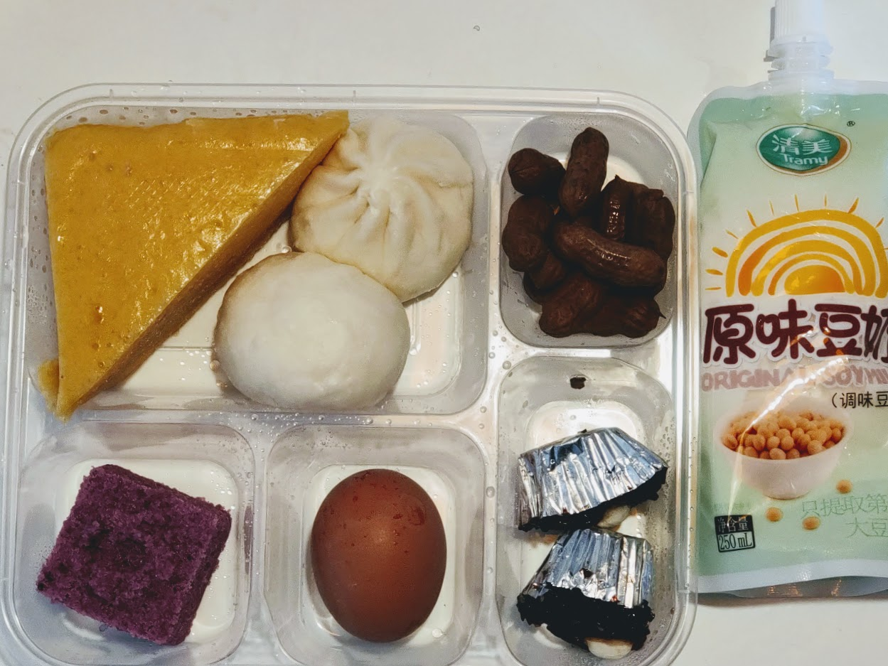
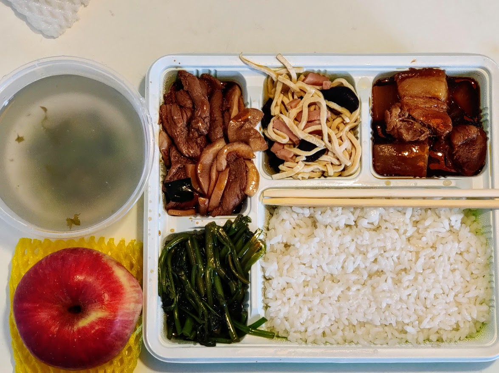
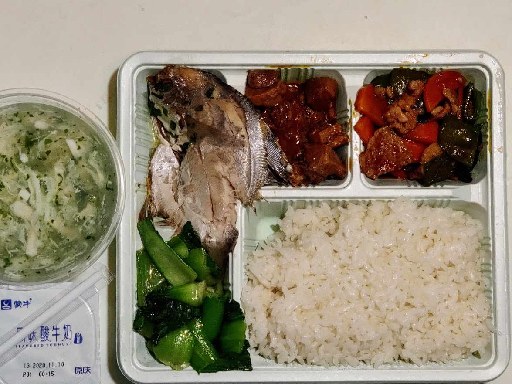

柬埔寨至上海-隔离记录-Day4
11月14日，入境隔离第四天。
足不出户的生活没有想象中的那么安逸。吃饭之后的我会在房间里漫无目的地来回踱步。
隔离点今天通知缴费，结束隔离的2天前会再有一次自费的核酸检测。这次说明了要同时做咽拭子和鼻拭子。
早餐，为什么早上会吃煮花生？

午餐，地瓜叶的梗有点老，红烧蹄膀好久没吃到过。

晚餐，一条鱼，不太下饭。米饭没吃光。

咖啡豆的消耗速度比我之前预期的高，1小时的时差也没有明显的感受。入住时房间内的24瓶饮用水已经喝掉了一半，在天猫超市下单的商品迟迟没有派送。我还是不喜欢双11这种活动，也许我不是这个活动的目标群体吧。
看完一部电影，关于爱情的一些幻想，想要讨论爱人之间的相处与关系如何处理。有几段情节处理得过于夸张，配角看见了熟人，让我有点出戏😆。
晚餐后研究Clash的DNS与cfw的mixin配置。昨天一整天附近都在施工，破碎头敲击混凝土的连续噪音，让我顿时想入手一副 AirPods Pro 。
本文地址 https://iamfuhui.github.io/2020/11/15/jian-bu-zhai-zhi-shang-hai-ge-chi-ji-lu-day4/